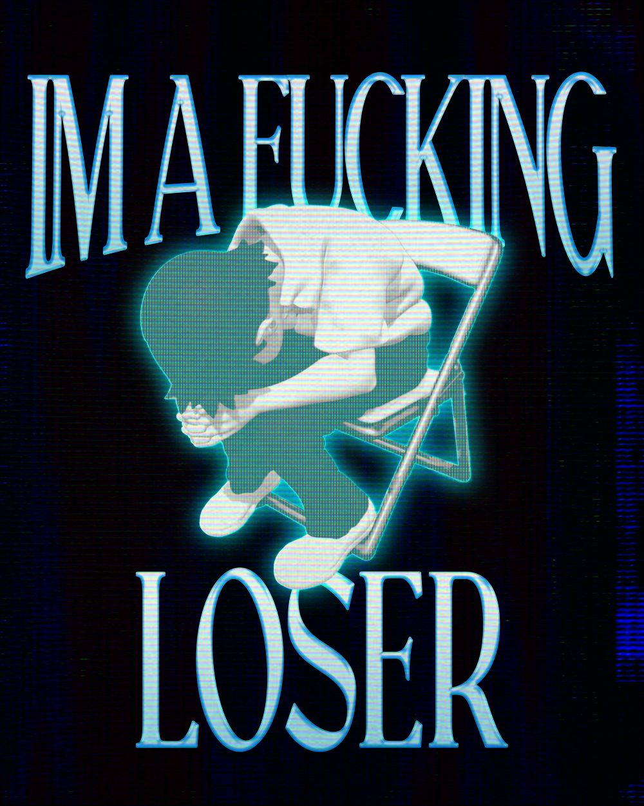
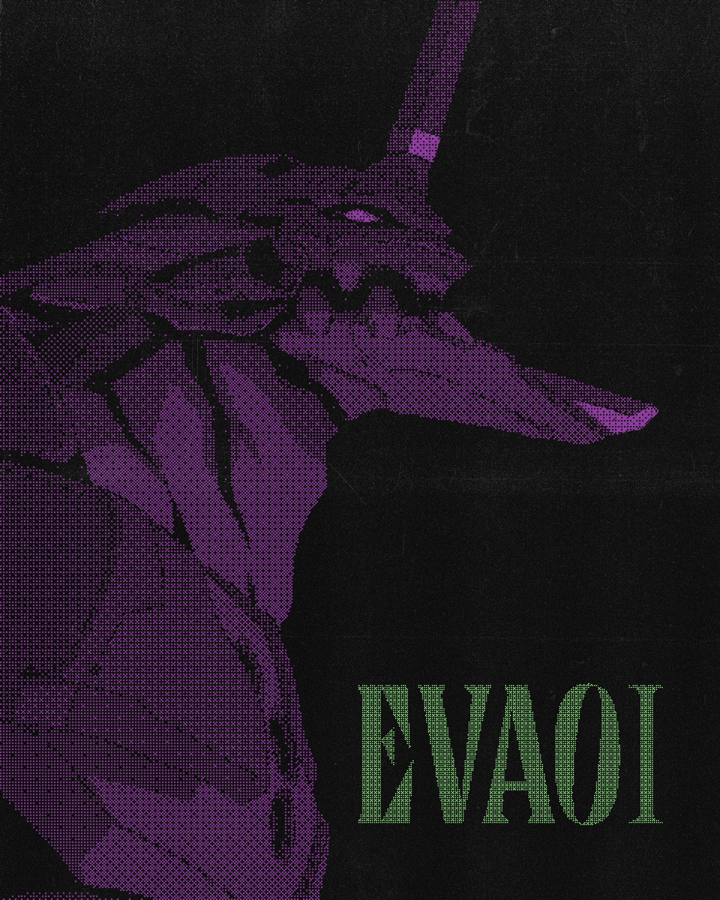
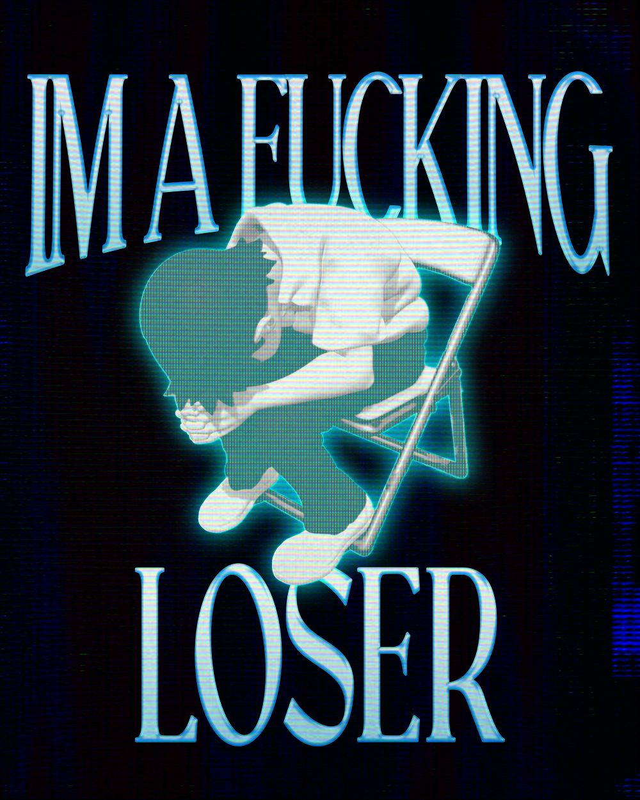
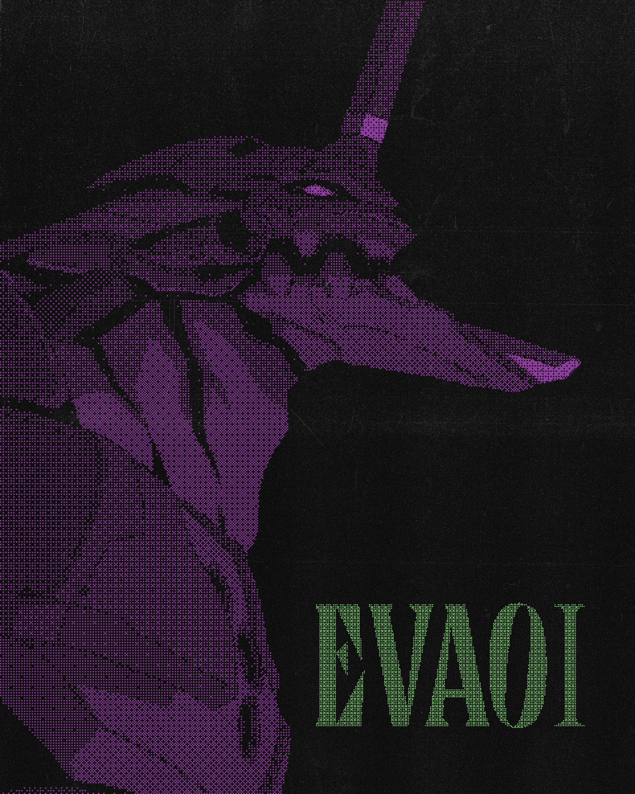

Posters
Poster fatti per conto mio con photoshop. Questi poster sono stati utili a sfogare un po' di creatività e fare cose a caso che mi venivano in mente scorrendo pinterest, divertente.
 Poster fatti per conto mio con photoshop. Questi poster sono stati utili a sfogare un po' di creatività e fare cose a caso che mi venivano in mente scorrendo pinterest, divertente.
 